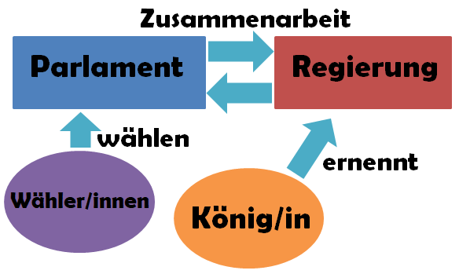

Wie du wahrscheinlich mitbekommen hast, ist am 8. September 2022 Queen Elizabeth II verstorben. Sie war von 1952 bis zur ihrem Tod die Königin des Vereinigten Königreichs von Großbritannien und Nordirland. Viele nennen sie Queen von „England“ oder „Großbritannien“, meinen aber das „Vereinigte Königreich“.
Wenn es eine Königin oder einen König gibt, dann spricht man von einer Monarchie. Häufig lebt die Königsfamilie wie früher in Schlössern und in Reichtum, hat aber oft keine politische Macht mehr.
In einer absoluten Monarchie hätte die Königin oder der König das alleinige Sagen. In England ist es eine parlamentarisch-konstitutionelle Monarchie. Hier regiert aktuell Premierministerin Liz Truss. In Deutschland haben wir gerade Bundeskanzler Olaf Scholz als Regierungschef.
Zusammen mit dem Parlament treffen sie alle wichtigen politischen Entscheidungen.
Was macht die Königin oder der König?
💭 Sprechblase Was macht die Königin oder der König?
Die Queen oder der King repräsentiert das Königshaus. Das heißt, sie oder er vertritt das Land bei wichtigen Veranstaltungen, zum Beispiel in Kindergärten und Schulen. In der Politik hat die Queen aber keine direkte Macht.
** Das politische System in Großbritannien sieht so aus:**

Queen Elizabeth II hat sich auch für tagespolitische Themen interessiert und sich regelmäßig mit der britischen Premierministerin oder dem Premierminister getroffen. Auch durfte sie die Mitglieder des Kabinetts wählen, die Teil der Regierung sind. Politisch hatte die Queen jedoch keine Macht.
Warum gibt es die Königsfamilie dann noch?
💭 RoboBoard Warum gibt es die Königsfamilie dann noch?
Vor allem ist sie ein Symbol für England und gibt dem Volk in schweren Zeiten Kraft. Sie kostet aber auch Geld. Das heißt, dass die Engländerinnen und Engländer mit Teilen ihrer Steuern das Leben der Königsfamilie bezahlen. Und das, obwohl die Königsfamilie heutzutage keinen Einfluss mehr hat und auch nicht demokratisch ist.
Demokratie bedeutet, dass das Volk die Regierung frei wählen darf. In eine Königsfamilie kann man allerdings nur hineingeboren werden oder einheiraten.
Nach dem Tod von Queen Elizabeth II ist ihr Sohn zum König geworden, King Charles III. Nun fragen sich nun viele Menschen, ob es an der Zeit wäre die Monarchie ganz abzuschaffen. Was meinst du? Findest du es gut, dass es noch Königshäuser gibt? Oder denkst du, dass man sie nicht mehr braucht, weil das Volk ihre Regierung ohnehin selbst wählt? Schreib uns gerne deine Meinung.